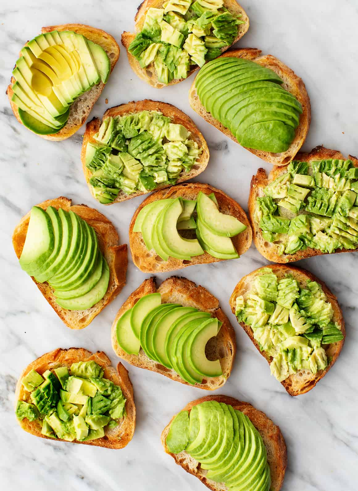
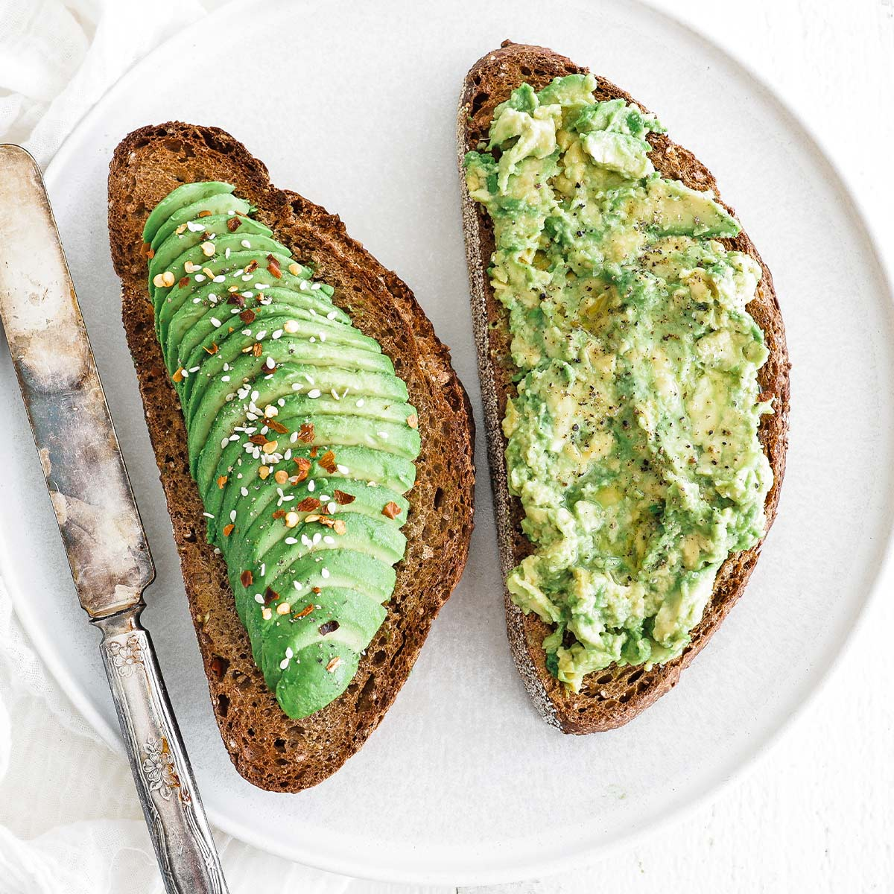

Avocade on Toast

Description
Make this simple speedy breakfast with just a few ingredients. Our smashed avocado on toast uses crusty sourdough bread and a pinch of chilli for a kick.
Ingredients

- Bread Sour Dough
- Avocado
- Salt & Pepper
- Chilli Powder optional
- Lemon/Lime juice optional
Steps

- Toast Sourdough bread
- Scoop out the center of avocado and remove the giant pip
- Squeeze lemon/lime juice ontop
- Take a pinch of Chilli powder and sprinkle ontop of avocado
- Do the same as above for the Salt & Pepper
- Enjoy!